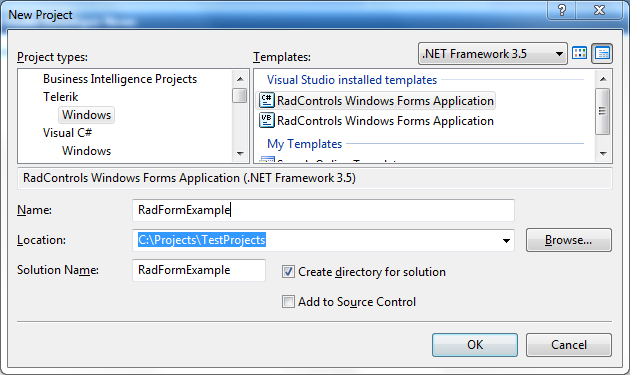

Themes
RadForm comes with a number of themes which can be easily applied by setting the ThemeName property.
This topic demonstrates how to apply predefined themes.
Applying Themes to RadForm
The themes allow you to modify the look-and-feel of a RadForm instance by simply setting
the ThemeName property.
This section shows how to apply the Office2007Black theme to a RadForm in the Visual Studio designer:
- Add a RadForm item in your project or change the base class of an existing standard Windows Form to Telerik.WinControls.UI.RadForm.
[C#] Changing WinForms form to Telerik RadForm
partial class Form1 : Telerik.WinControls.UI.RadForm
[VB.NET] Changing WinForms form to Telerik RadForm
Partial Class Form1
Inherits Telerik.WinControls.UI.RadForm
Open the Design View of the Form and open the Visual Studio Toolbox.
In the Visual Studio Toolbox find the __Office2007BlackTheme__component.

Drag and drop the component onto your RadForm.
Open the Properties Window for the form and find the ThemeName property.
In order to apply the Office2007Black theme to RadForm, choose the 'Office2007Black' option from the ThemeName drop-down:

You do not need to add multiple Theme Components on each form which you would like to customize. By adding one Theme Component on a form, the theme is loaded in the memory and it becomes available for all RadControls and RadForms in your project.